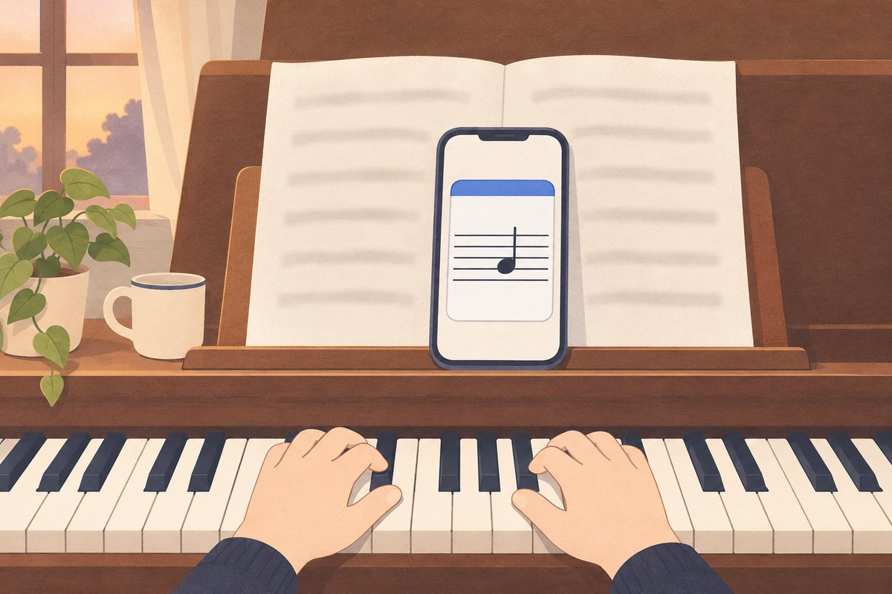

iPhone・iPad・Android 向け・譜読みと楽典の練習
線を数えずに、
楽譜を読む。
「ド、レ、ミ…」と線を数えないと読めない。ヘ音記号になると止まる。ゲームではクリアできるのに、ピアノの前では読めない。「譜読みカード」は、五線の音を毎日少しずつカードで確かめ、鍵盤でオクターブまで答えて、本当に読めるようにするためのアプリです。
App Store・Google Play で見る（準備中）買い切りの有料アプリです。一度買えば、すべての機能が使えます。アプリ内課金・サブスクリプション・広告はありません。

こんな困りごとのために作りました
鍵盤が1オクターブしかない・オクターブちがいでも正解になる
鍵盤は88鍵ぜんぶ。横に送れます。判定はオクターブまで。ちがう高さを押したときは「あなたの答え: ラ（A5）」と、押した鍵と正しい鍵を色で見せます。
ヘ音記号やハ音記号が無い・加線が足りない
ト音・ヘ音・アルト・テナー・大譜表の5つ。加線は上下5本まで、♯・♭・ダブルシャープ・ダブルフラット、調号つきの出題も選べます。
音が出ない・1オクターブ高い音が鳴る
ピアノの音は88鍵それぞれの本物の録音です（高さをずらして作っていません）。全部の鍵がその鍵の高さかを、倍音の並びで確かめました。基準の音は 440Hz と 442Hz。
広告・後出しの課金・うるさい BGM
広告もアプリ内課金もありません。BGM と効果音も入れていません。鳴るのはピアノの音だけです。
MIDI の鍵盤で練習したい
USB・Bluetooth の MIDI 鍵盤で、弾いた鍵がそのまま答えになります。
正解を見せてくれない・苦手が分からない
判定のあと、正しい答えを五線・鍵盤・音で必ず見せます。まちがえた音と、時間がかかった音は「苦手」に入り、忘れかけたころにもう一度出ます。
13のドリル
| 譜を読む | 音符を読む（音名で）・鍵盤で答える（オクターブまで）・五線に置く・調号・音符の長さと拍子・記号と用語（153語） |
|---|---|
| 音程と和音 | 音程を見る・音程を聞く・和音を見る（コードネーム・転回形）・和音を聞く・コードを弾く・音階と旋法（13種）・調の中の和音（度数） |
| 今日の1回 | 選んだドリルを混ぜた1回（10・20・30問）。忘れかけ → はじめて の順に出します |
| 辞典 | 音程・和音・音階・調と調号（30調）・記号と用語・鍵盤から引く（押した音から和音の名前） |
| 記録 | 14日の正解率・ドリルごとの覚えた数・苦手な音の地図（鍵盤の上に色） |
| そのほか | 音名はドレミ・CDE・ドイツ音名・ハニホから。iPad と iPhone Duo を開いた横長の画面では、問いと答えを左右に並べます。iCloud で記録がそろいます（iPhone・iPad）。ショートカット・Siri・Spotlight。ダークモード |
音程・和音・調・音階の答えは、別の作りの音楽理論のライブラリ music21 の答えと全部突き合わせて確かめています。くわしくは素材の出典へ。